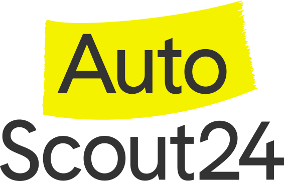

3 hotfixes
In 4.5 years of 3-week releases
Near-zero production regressions in multi-banking FinTech via testing culture & DevOps.
54 months (4.5 yrs)
3 hotfixes
Near-zero production regressions in multi-banking FinTech via testing culture & DevOps.
Streamlined build & verification pipelines for faster developer feedback loops.
Led workshops and tech talks on automated testing best practices and clean craft.
Delivered on the #1 most-used Search screen ahead of deadline with zero known bugs.
Android & DevOps Engineer · Freelance & Consulting
Mission-critical Android application enhancing real-time communication between train stewards across trains, streamlining delay reporting and operational coordination.
Android Engineer · External Consultant via appDev · Product Revamp Milestone
Built the next-generation Hermes courier navigation app across Germany — replacing legacy vehicle-attached tablet software with portable scanner hardware unifying navigation and parcel scanning.
Android Engineer · External Consultant via appDev · Search Redesign & Leasing Milestones

High-visibility marketplace milestones for one of Europe's largest online car platforms for buying, selling, and leasing new and used vehicles.
Android & DevOps Engineer · Financial & Multi-Banking Products (incl. C24Bank)
Core financial and multi-banking products (including C24Bank) at Germany's leading comparison platform.
Android Engineer
Feature development and responsive tablet optimization for the Pizza.de Android app (originally Pizza.de GmbH, acquired by Lieferando / Takeaway.com).
Android & Kotlin Multiplatform Engineer
Built cross-platform apps — a Golf Game Manager and a Storyteller app for kids — using Kotlin Multiplatform (KMP).
Android Engineer · Client Consulting
Delivered Android apps for internal projects and client consulting, including a cargo-bike booking application.
Officially recognized by Google for deep expertise in Android and active contributions to the Android developer community.
Awarded by Google for Android Screenshot Testing Playground, recognizing contributions to the Android testing open-source ecosystem.
Droidcon / nextapp DevCon Berlin (6 yrs), Droidcon Lisbon (5 yrs), and Droidcon London (1 yr).